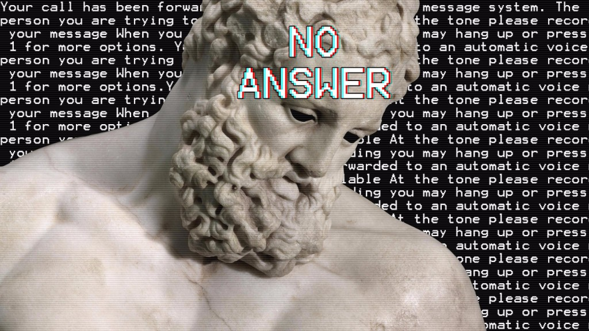

Because I care about human beings, I want them to be free to do what is right for them. Isn't that more important than mere peace on earth? Isn't freedom, even dangerous freedom, preferable to the safest slavery, to peace bought with ignorance, cowardice, and submission?
Can we imagine a togetherness that isn't founded on gross generalizations, conceptualizing ourselves as unique individuals who still stand to gain from looking out for one another? Can we identify with each other rather than with categories or masters?
I am not unselfish so long as the end remains my own, and I, instead of giving myself up to be the blind means of its fulfillment, leave it always an open question. Not against love, but against sacred love, not against thought, but against sacred thought, not against socialists, but against sacred socialists. Free competition is not “free,” when you lack the THINGS necessary for competition. Nonviolence, in its current manifestations, is based on falsified histories of struggle. It has implicit and explicit connections to white people’s manipulations of the struggles of people of color. Its methods are wrapped in authoritarian dynamics, and its results are harnessed to meet government objectives over popular objectives. It masks and even encourages patriarchal assumptions and power dynamics. Its strategic options invariably lead to dead ends. And its practitioners delude themselves on a number of key points.
The defining pillars of fascism are Nationalism, Corporatism, and Statism. With nationalism, the fascist state tries to maximize social cohesion by playing on the instinctual tribalism that humans default to. It is very easy to get people to cooperate, as long as the people they are cooperating with are seen as part of their "tribe". Corporatism invokes a need for strict hierarchy, an authoritative chain in which the individual engages with the rest of society. While fascism mostly supports meritocracy, it also does not see the existence of different social classes as a failing, but as a necessity. The fascist sees different classes of people more as different organs of a body, all contributing to the survival of the whole. In this way, fascism is deeply collectivistic. Finally, Statism is about the absolute power of the central authority. The State is the brain of the fascist regime, and with the corporatist hierarchies and nationalistic tribalism achieves a totalitarian form of social cohesion.
No one is more qualified than you are to decide how you live; no one should be able to vote on what you do with your time and your potential unless you invite them to. All of us have a cop in our own head that prevents us from creating ourselves or expressing ourselves. The cop in your head that stops you from throwing away that stack of army recruiting brochures in the lobby at your community college is the same cop in your head that stops you from interpreting a work of art hanging in a gallery.
Doing these things may just seem whimsical or eccentric, but they are therapeutic. Slowly you liberate your mind and begin to break from the ruling ideology. How is a book supposed to be read? How is art supposed to be interpreted? How is your life supposed to be lived? These questions are all interconnected, and if you begin to interrogate and destroy one, the others begin to fall too. A book is a collection of text that some useless shitbird decided would be useful to bind together. To get full anti-realist up in here, words are in and of themselves meaningless, there is no right way to read anything, there's no right way to make or interpret art, there's certainly no right way to live.
 If we decide that there is no external figure providing meaning or justification in any sense, to our pointless existences, we acknowledge that there is no universality in anything whatsoever. If we acknowledge the lack of universal morality, lack of universal meaning, nothing is right and nothing is wrong. I choose to base my affairs on what pleases me, so while I can see some possible value of enjoyment in reading books non-linearly but I don't much care for the effort that it takes. Perhaps the joy derived in non-linear or "eccentric" reading/writing/creation styles is that of rebellion in and of itself? In breaking the mold of traditionalist everything, one might be able to discover a new unique virtue in which they find themselves developing. If one begins to interrogate any of the problems mentioned above, we find that we simply don't have an answer. We can base them upon the criteria of practicality, but ultimately we need to base that practicality on something. Is that something a goal of conformity to existing power structures? Is that goal a conscious rejection of power structures and a direct challenge to conformity? Hedonism? Self-development?
Peering through the fog behind his eyes, he saw an alcohologram: a world of anguish, in which intoxication was the only escape. Hating himself even more than he hated the corporate killers who had created it, he stumbled to his feet and headed back to the liquor store. Ensconced in their penthouses, they counted the dollars pouring in from millions like him, and chuckled to themselves at the ease with which all opposition was crushed. But they, too, often had to drink themselves to sleep at night – if ever those vanquished masses stop coming back for more, the tycoons sometimes fretted to themselves, there’s gonna be hell to pay. Every fucking project I engage in is ruined or nearly ruined by alcohol or drugs. You set up a collective living situation and everyone is too drunk or stoned to do the basic chores, let alone maintain an attitude of respect. You want to create community, but after the show everyone just goes back to their rooms and drinks themselves to death. If it’s not one substance to abuse it’s a motherfucking other. I understand trying to obliterate your consciousness is a natural reaction to being born in alienating capitalist hell, but I want people to see what we anarchists are doing and say “Yeah, this is better than capitalism!”…which is hard to say if you can’t walk around without stepping on broken forty-ounce bottles. I’ve never considered myself straight-edge, but fuck it, I’m not taking it anymore!